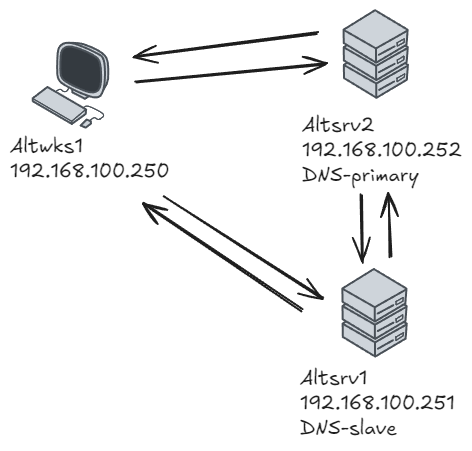
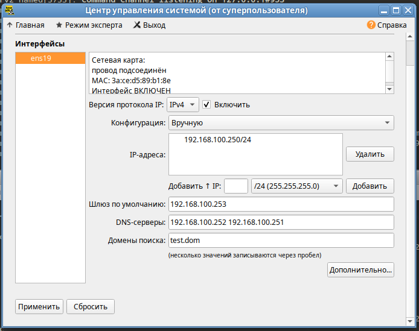

Билет 10. DNS с репликацией между первичным и вторичным сервером с фильтрацией трафика
Используемые ВМ
- Клиентский узел - любая ВМ на выбор
- Сервер DNS (primary) - любая ВМ на выбор
- Сервер DNS (secondary)- любая ВМ на выбор
Целевое состояние
- Функциональные требования
- DNS-сервер с зоной test.dom (первичный по отношению к зоне) и зоной обратного просмотра, соответствующая IP-сети стенда
- DNS-сервер, вторичный по отношению к обоим указанным зона
- репликация обеих зон работает при обновлении зон на первичном сервере
- клиентский узел настроенный на разрешение имен через оба DNS-сервера
- Требования безопасности
- зонные трансферы возможны только между первичным и вторичным DNS-серверами, но не доступны с других узлов стенда
- правила фильтрации трафика на обоих DNS-серверах разрешают прием запросов от клиентов и трафик репликации между серверами
- правила фильтрации трафика позволяют выполнять обновление ПО на DNS-серверах
- все остальные варианты сетевого взаимодействия с DNS-серверами блокируются
Методика проверки
- Проверка подключений с клиентского узла или любого другого узла стенда, кроме DNS-серверов
- есть возможность выполнить запрос к DNS-серверу
- нет возможности запросить трансфер зоны
- утилитой nmap к любому другому порту - порты протоколов, не указанных в требованиях безопасности не должны быть доступны
- Проверка возможности выполнить обновление ПО серверов DNS 
Altsrv2
apt-get install bind bind-utils
cd /var/lib/bind
touch zone/test.dom.zone
touch zone/192-168.100.zone
chown named:named zone/test.dom.zone
chown named:named zone/192-168.100.zone
vim zone/test.dom.zone
vim zone/192-168.100.zone
named-checkzone 100.168.192.in-addr.arpa zone/192-168.100.zone
named-checkzone test.dom zone/test.dom.zone
vim etc/local.conf
vim etc/options.conf
named-checkconf -p
/var/lib/bind/zone/test.dom.zone
/var/lib/bind/zone/192-168.100.zone
etc/local.conf
/var/lib/bind/etc/options.conf
iptables
Altsrv1
apt-get install bind bind-utils
vim /var/lib/bind/etc/options.conf
cd /var/lib/bind
control bind-slave enabled
vim etc/local.conf
named-checkconf -p
rndc reload
dig @192.168.100.251 test.dom AXFR
/var/lib/bind/etc/options.conf
etc/local.conf
iptables
Altwks1

[sysadmin@altwks1 ~]$ cat /etc/resolv.conf
# Generated by resolvconf
# Do not edit manually, use
# /etc/net/ifaces/<interface>/resolv.conf instead.
search test.dom
nameserver 192.168.100.252
nameserver 192.168.100.251
[sysadmin@altwks1 ~]$ host -t NS test.dom
test.dom name server altsrv2.test.dom.
test.dom name server altsrv1.test.dom.
[sysadmin@altwks1 ~]$ host -t NS test.dom 192.168.100.251
Using domain server:
Name: 192.168.100.251
Address: 192.168.100.251#53
Aliases:
test.dom name server altsrv1.test.dom.
test.dom name server altsrv2.test.dom.
apt-get install nmap
[root@altwks1 ~]# nmap -sS altsrv1
Starting Nmap 7.80 ( https://nmap.org ) at 2025-03-29 14:44 MSK
Nmap scan report for altsrv1 (192.168.100.251)
Host is up (0.00050s latency).
Not shown: 998 filtered ports
PORT STATE SERVICE
80/tcp closed http
443/tcp closed https
MAC Address: FA:E1:C3:2C:2B:9A (Unknown)
Nmap done: 1 IP address (1 host up) scanned in 4.83 seconds
[root@altwks1 ~]# nmap -sU altsrv1
Starting Nmap 7.80 ( https://nmap.org ) at 2025-03-29 14:44 MSK
Nmap scan report for altsrv1 (192.168.100.251)
Host is up (0.00079s latency).
Not shown: 999 open|filtered ports
PORT STATE SERVICE
53/udp open domain
MAC Address: FA:E1:C3:2C:2B:9A (Unknown)
Nmap done: 1 IP address (1 host up) scanned in 18.55 sec